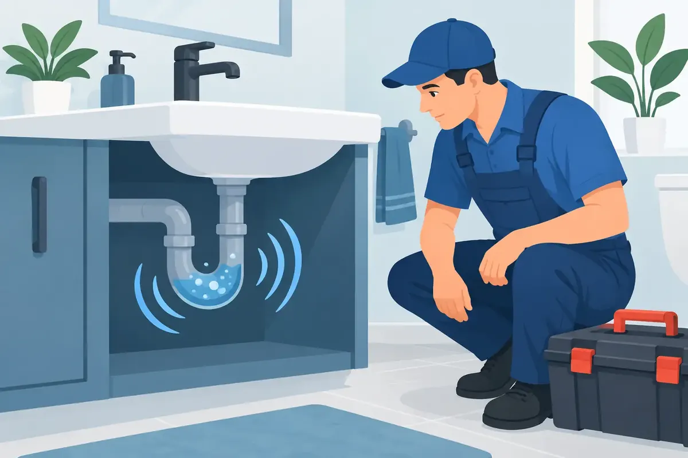

A drain that gurgles after you flush a toilet, run the dishwasher, or empty a sink is more than an annoying sound. Drain gurgling causes often point to trapped air, a developing clog, or a drainage system that cannot move wastewater as it should. In a Middle Tennessee home, catching the source early can be the difference between a straightforward drain repair and a messy sewer backup.
The sound happens when air is forced through water inside a drain line. A healthy plumbing system moves water out while allowing air to enter through proper venting. When either flow is restricted, air looks for another path. That path may be through the water in a sink trap, shower drain, or toilet bowl, creating the familiar bubbling or gulping noise.
What Drain Gurgling Usually Means
A single gurgle from one fixture may be a small, local issue. Repeated sounds, multiple gurgling fixtures, slow drains, foul odors, or water rising in a tub after a toilet flush deserve more attention. Those signs can indicate that the problem is farther down the line, sometimes in the main sewer connection.
The exact cause depends on which fixture makes noise and when it happens. For example, a kitchen sink that gurgles while its own water drains may have grease and food buildup in its branch line. A bathtub that bubbles when a nearby toilet is flushed may be reacting to a restriction in the shared drain line. When several fixtures throughout the house act up, the main sewer line becomes a more likely concern.
Common Drain Gurgling Causes
A Partial Clog in a Fixture Drain
Hair, soap residue, toothpaste, food scraps, grease, and paper products can narrow a drain over time. Water may still pass through the pipe, but not freely enough to maintain normal air pressure. As water squeezes around the buildup, it pulls or pushes air through the nearby fixture.
A plunger can sometimes clear a simple sink, tub, or toilet blockage. However, harsh chemical drain cleaners are rarely the right answer. They may fail to reach the actual obstruction, damage certain pipes or seals, and create a safety hazard for anyone who later works on the drain. A professional drain cleaning method is usually safer and more effective when the gurgling keeps returning.
A Clog in a Shared Branch Line
Many bathroom fixtures connect to the same branch drain before reaching the larger sewer line. That is why one fixture can react when another is used. A toilet flush sends a large volume of water through the shared pipe. If a partial clog slows that flow, air pressure can push back toward the shower, tub, or sink.
This is a common situation where waiting can create unnecessary trouble. A branch-line restriction may eventually become a complete blockage, leaving wastewater with nowhere to go except back through the lowest open drain. In many homes, that means the tub or shower.
A Blocked Plumbing Vent
Your plumbing vents usually extend through the roof. Their job is to let air enter and exit the drainage system so water can flow without siphoning traps dry or creating pressure problems. Leaves, animal nesting material, storm debris, or other obstructions can restrict that airflow.
Vent issues can create gurgling even when the drain line itself is reasonably clear. They may also lead to sewer-like odors because the water in a fixture trap can be pulled out or disturbed. Diagnosing a vent problem often requires experience and safe roof access, so it is best handled by a qualified plumber rather than a homeowner trying to clear a roof vent on their own.
A Main Sewer Line Restriction
When toilets, sinks, showers, and tubs in different parts of the building all drain slowly or make noise, a main sewer line restriction may be developing. This line carries wastewater from the property to the municipal sewer or septic system. Grease accumulation, heavy paper buildup, foreign objects, pipe damage, or settled debris can limit its capacity.
For homes with older sewer piping, tree roots are another concern. Roots seek moisture and can enter through small openings, joints, or cracks. Once inside, they grow and catch waste, creating a restriction that can worsen over time. A camera inspection helps identify whether the issue is simple buildup, root intrusion, a broken pipe, or another condition that calls for a different repair.
Trouble With a Septic System
For properties served by a septic system, gurgling can be an early sign that the tank is overdue for service, the outlet is restricted, or the drain field is not accepting water properly. Unlike a standard fixture clog, septic concerns need prompt attention because continued use can lead to backups, odors, and damage around the system.
If your drains gurgle along with soggy ground near the septic area, sewage odors outdoors, or wastewater backing up indoors, reduce water use and arrange professional service right away. Running additional laundry loads or taking long showers can make the backup worse.
Signs You Should Not Ignore
A gurgling drain is worth watching, but certain symptoms call for faster action. Contact a plumber promptly if you notice sewage odors, repeated toilet bubbling, water backing up into a tub or shower, multiple slow drains, or a toilet that will not flush normally. These are not problems to solve by repeatedly plunging every fixture in the home.
Commercial property owners should take these symptoms seriously as well. A drain or sewer backup can interrupt operations, damage flooring and inventory, create sanitation concerns, and affect employees or customers. Early diagnosis protects the property and helps avoid a more disruptive emergency call.
What You Can Safely Check First
Before scheduling service for a single noisy fixture, pay attention to the pattern. Note whether the sound occurs only while that fixture drains or when another fixture is used. Check for slow drainage, standing water, odors, or water appearing where it should not. This information gives a plumber a useful starting point.
You can also remove visible hair from a shower or bathroom sink stopper and use a plunger correctly on a minor, isolated clog. For a sink, cover the overflow opening to create suction. For a toilet, use a flange plunger and avoid flushing repeatedly if the bowl level rises.
Do not pour boiling water into every drain, mix cleaning products, force objects into the pipe, or climb onto the roof to investigate a vent. These steps can damage plumbing, cause injury, or mask a larger sewer problem until it becomes a backup.
How a Plumber Finds the Real Cause
A proper diagnosis begins with the symptoms and the layout of the plumbing system. A trained technician may test fixtures, inspect accessible drains, and determine whether the issue is local, shared, or affecting the main line. When the blockage or pipe condition is unclear, a sewer camera inspection can show what is happening inside the line rather than relying on guesswork.
The repair should match the cause. A local clog may need targeted drain cleaning. Roots or a main-line obstruction may require more thorough cleaning and camera verification. A damaged, sagging, or deteriorated sewer pipe may need repair or replacement instead. The right solution is not always the cheapest first step, but it should be explained clearly with upfront options so you can make a confident decision.
Angle Stop Plumbing brings 31 years of experience to drain and sewer concerns across Middle Tennessee, with respectful service, clear communication, and emergency help when a backup cannot wait. Families should not have to wonder whether a plumber will treat their home with care or speak appropriately around their children.
Preventing Future Gurgling and Backups
Prevention is mostly about protecting the drains from what does not belong in them. Keep grease, coffee grounds, fibrous food scraps, wipes, hygiene products, and large amounts of paper out of the plumbing. Even products labeled flushable can contribute to restrictions in real-world drain systems.
Routine maintenance is especially wise for properties with mature trees, older pipes, frequent drain issues, or a history of roots in the sewer line. A planned inspection can reveal developing concerns before they interrupt a holiday gathering, a busy workday, or an ordinary evening at home.
If your drain is gurgling once and then stops, keep an eye on it. If the sound repeats, spreads to other fixtures, or comes with slow drainage or backup, treat it as your plumbing system asking for help. A timely professional inspection brings peace of mind and helps keep a small warning from becoming a household emergency.